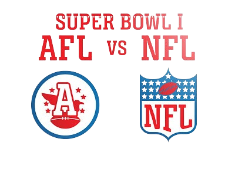

HOME
RULES
EQUIPMENT
HISTORY
TEAMS
SUBSCRIBE
American Football
American football also known as gridiron football is a sport that evolved from soccer and rugby. The National Football League (NFL) was founded in 1920 as the American Professional Football Association (APFA) with ten teams from four states.
The American Football League (AFL) was a major professional American football league that operated for ten seasons from 1960 until 1970. The AFL's original lineup consisted of an Eastern division of the New York Titans, Boston Patriots, Buffalo Bills, and the Houston Oilers, and a Western division of the Los Angeles Chargers, Denver Broncos, Oakland Raiders, and Dallas Texans.
In 1967 the NFL and AFL agreed to play an annual championship game. The best teams from each league would
match up in a game that would eventually be called the Super Bowl. The two leagues officially merged in 1970
creating the NFL we know today.
First Game
The first ever football game was played November 6, 1869. between Rutgers and Princeton, two college teams.
Each team consisted of 25 players and used a round ball that could not be picked up or carried.
It could, however, be kicked or hit with the feet, hands, head with the objective
being to advance it into the opponent's goal.
